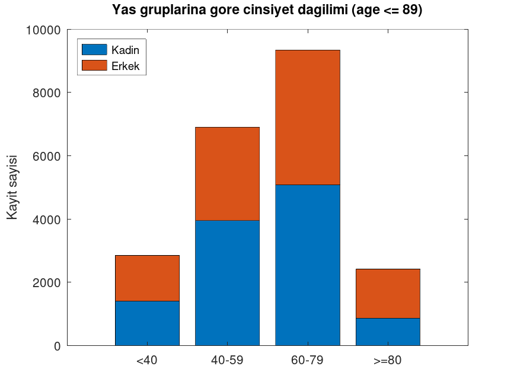
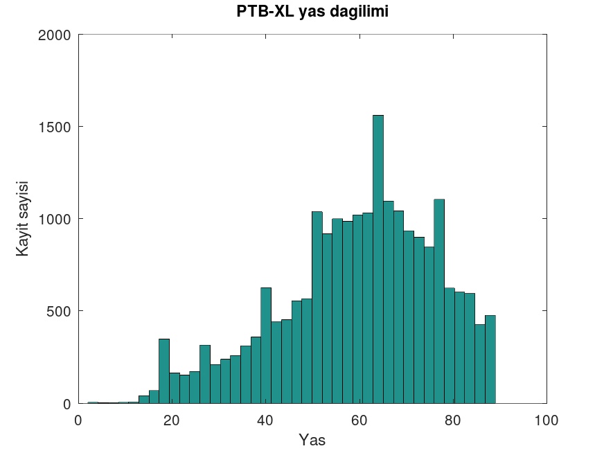
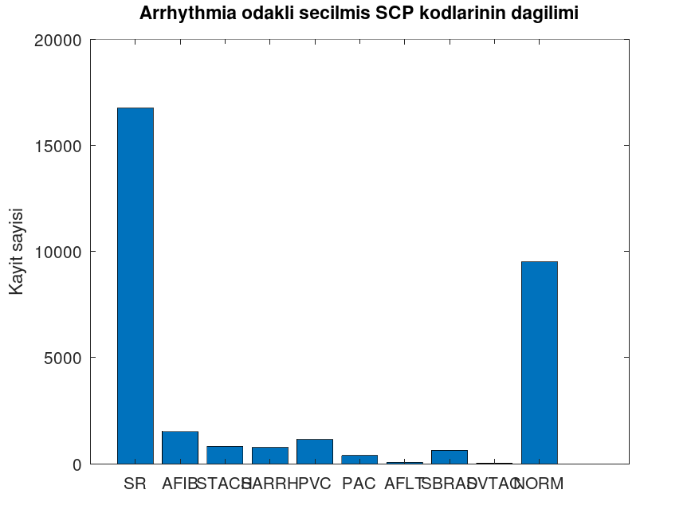
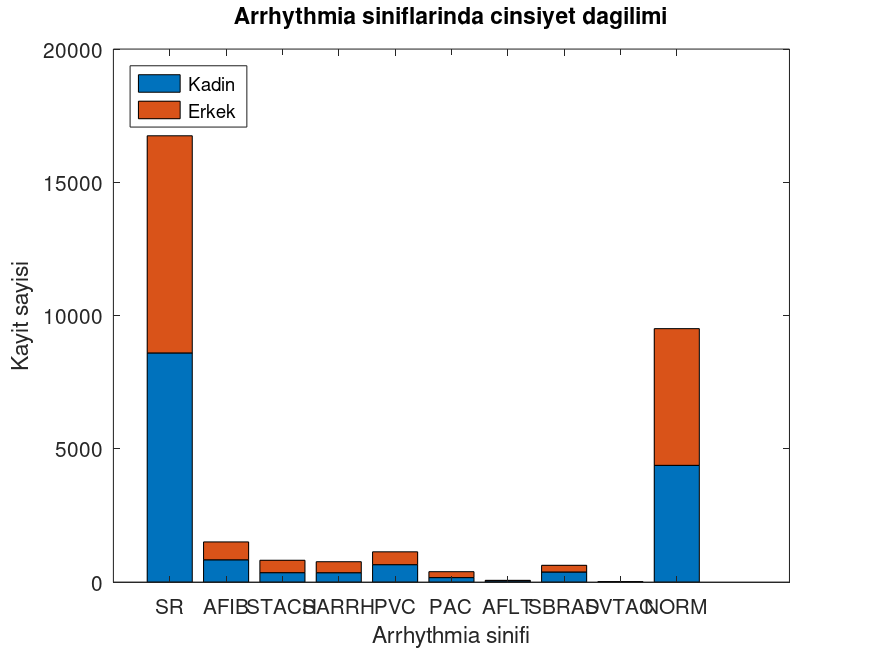
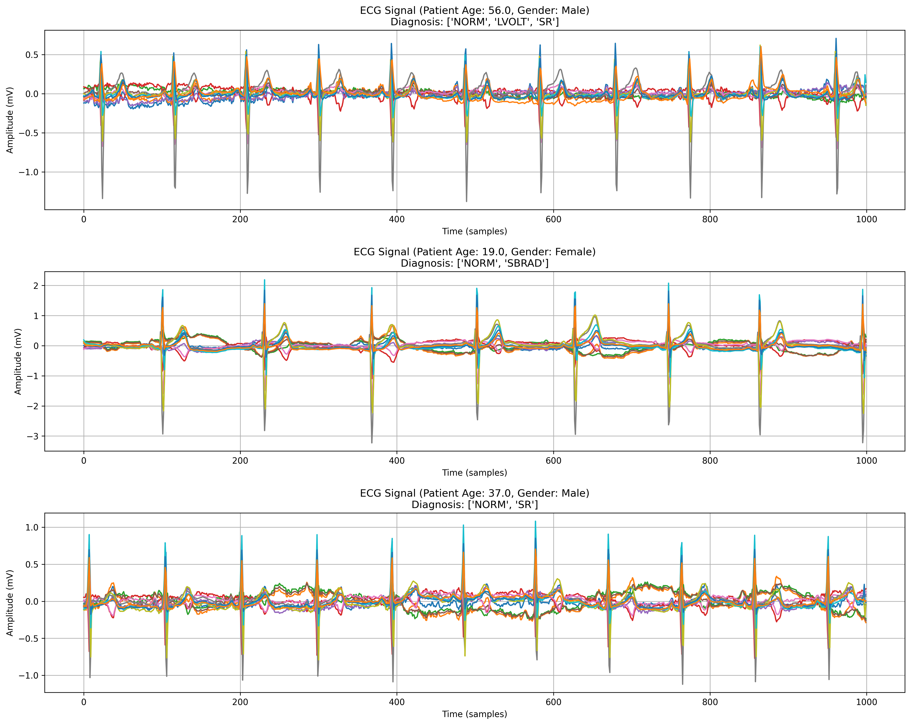
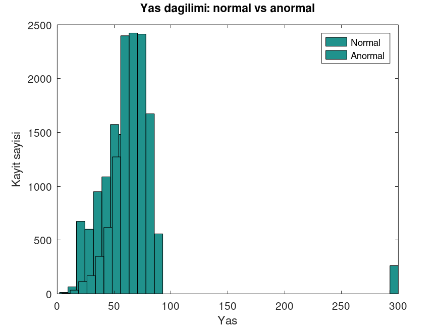
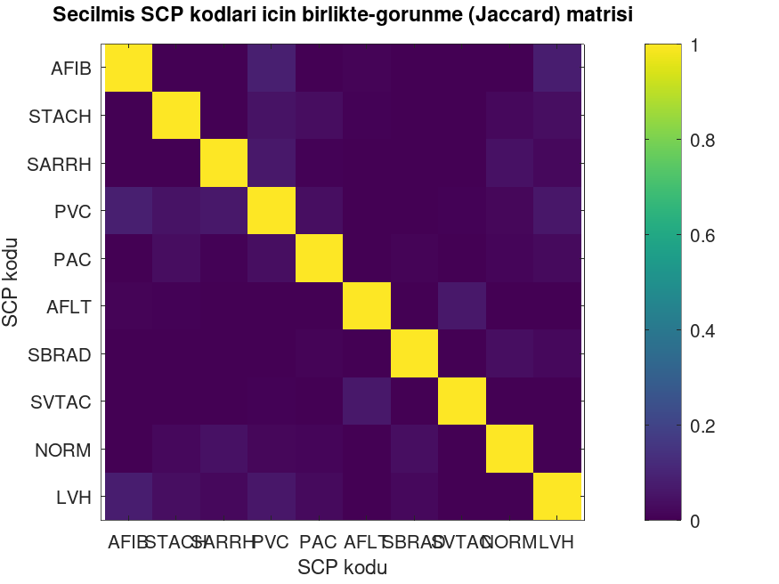
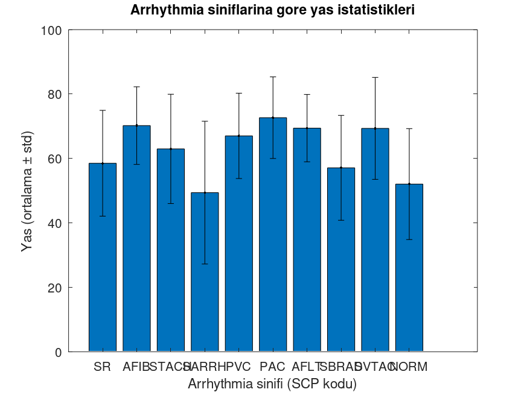

Exploratory Data Analysis (EDA) & MATLAB Dashboard Integration
Project Overview Presentation
Analysis of the patient population reveals key demographic trends critical for model training:


This histogram provides a granular view of the age distribution across the entire dataset.

Our dashboard analysis highlights a severe class imbalance, a common challenge in medical datasets.
This chart breaks down the male/female ratio for each specific arrhythmia class.

Standardized diagnostic codes per record (e.g., 'AFIB': 100.0). Supports multi-label classification logic.
Patient ID, Age, Sex, Height, and Weight. Missing values are sanitized (NaN handling) via MATLAB scripts.
Pointers to raw high-resolution (500Hz) and low-resolution (100Hz) WFDB signal files.
ptbxl_read_metadata.m scans CSV using logical indexing for O(1) access speed.The dashboard integrates directly with the raw signal files using the WFDB toolbox.
Capabilities:


Before deep learning, we established a baseline using ptbxl_simple_model.m based purely on metadata.
Insight: The graph clearly shows that "Abnormal" cases (Teal) have a much wider and older age distribution compared to "Normal" cases. This proves that age is a highly discriminative feature even for simple logistic regression.
Using Jaccard Similarity in ptbxl_data_analysis.m, we mapped how often different arrhythmias occur together.
Interpretation:
This helps in defining multi-label learning strategies.


The average age (bars) and standard deviation (error bars) were analyzed for each arrhythmia class.
The chart indicates that classes like PVC and PAC have a higher average patient age, whereas SBRAD or NORM classes are frequently observed in younger populations as well.
Load CSV & WFDB files into MATLAB/Octave.
Handle NaNs, clean labels, resize signals.
Visual discovery & stats via Dashboard.
Feature extraction & Deep Learning (Python).
Conclusion: The MATLAB-based EDA process successfully revealed the dataset's imbalanced structure and demographic properties, providing essential "prior knowledge" to guide the Deep Learning model architecture.
Let's run the Dashboard live.
Thank you for listening.